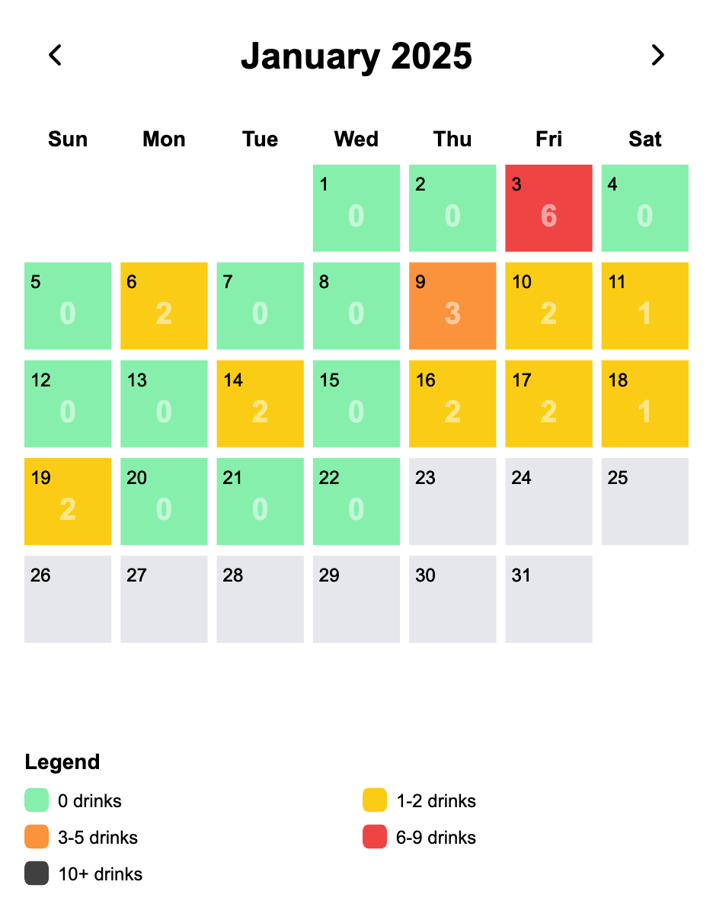

Drink Tracking App
My first app for phone written with next.js and allows users to track and visualize their alcohol consumption. I had no prior react/javascript experience and wrote it all with assistance from Claude.
GitHubwww.drinktracker.net (In testing: send me an email for access)
